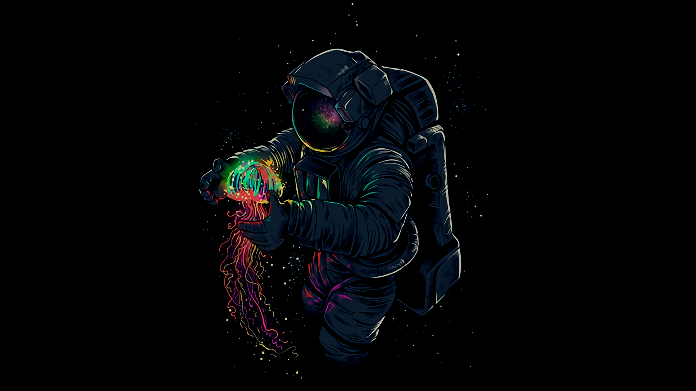

Uranus is tilted on its side
Uranus appears to be a featureless blue ball upon first glance, but this gas giant of the outer solar system is pretty weird upon closer inspection. First, the planet rotates on its side for reasons scientists haven't quite figured out. The most likely explanation is that it underwent some sort of one or more titanic collisions in the ancient past. In any case, the tilt makes Uranus unique among the solar system planets.
Jupiter's moon Io has towering volcanic eruptions
For those of us used to Earth's relatively inactive moon, Io's chaotic landscape may come as a huge surprise. The Jovian moon has hundreds of volcanoes and is considered the most active moon in the solar system, sending plumes up to 250 miles into its atmosphere . Some spacecraft have caught the moon erupting; the Pluto-bound New Horizons craft caught a glimpse of Io bursting when it passed by in 2007.
Mars also has the longest valley
If you thought the Grand Canyon was big, that's nothing compared to Valles Marineris. At 2,500 miles (4,000 km) long, this immense system of Martian canyons is more than 10 times as long as the Grand Canyon on Earth. Valles Marineris escaped the notice of early Mars spacecraft (which flew over other parts of the planet) and was finally spotted by the global mapping mission Mariner 9 in 1971. And what a sight it was to miss — Valles Marineris is about as long as the United States!
The lack of active plate tectonics on Mars makes it tough to figure out how the canyon formed. Some scientists even think that a chain of volcanoes on the other side of the planet, known as the Tharsis Ridge, somehow bent the crust from the opposite side of Mars, thus creating Valles Marineris. More close-up study is needed to learn more, but you can't send a rover over there easily.
Venus has super-powerful winds
Venus is a hellish planet with a high-temperature, high-pressure environment on its surface. Ten of the Soviet Union's heavily shielded Venera spacecraft lasted only a few minutes on its surface when they landed there in the 1970s.
But even above its surface, the planet has a bizarre environment. Scientists have found that its upper winds flow 50 times faster than the planet's rotation. The European Venus Express spacecraft (which orbited the planet between 2006 and 2014) tracked the winds over long periods and detected periodic variations. It also found that the hurricane-force winds appeared to be getting stronger over time.
There is water ice everywhere
Water ice was once considered a rare substance in space, but now we know we just weren't looking for it in the right places. In fact, water ice exists all over the solar system. Ice is a common component of comets and asteroids, for example. But we know that not all ice is the same. Close-up examination of Comet 67P/Churyumov–Gerasimenko by the European Space Agency's Rosetta spacecraft, for example, revealed a different kind of water ice than what is found on Earth.
That said, we've spotted water ice all over the solar system. It's in permanently shadowed craters on Mercury and the moon, although we don't know if there's enough to support colonies in those places. Mars also has ice at its poles, in frost and likely below the surface dust. Even smaller bodies in the solar system have ice – Jupiter's moon Europa, Saturn's moon Enceladus, and the dwarf planet Ceres, among others.
Spacecraft have visited every planets shared by abhi
We've been exploring space for more than 60 years, and have been lucky enough to get close-up pictures of dozens of celestial objects. Most notably, we've sent spacecraft to all of the planets in our solar system — Mercury, Venus, Earth, Mars, Jupiter, Saturn, Uranus and Neptune — as well as two dwarf planets, Pluto and Ceres.
The bulk of the flybys came from NASA's twin Voyager spacecraft, which left Earth in 1977 and are still transmitting data from beyond the solar system in interstellar space. Between them, the Voyagers clocked visits to Jupiter, Saturn, Uranus and Neptune, thanks to an opportune alignment of the outer planets.